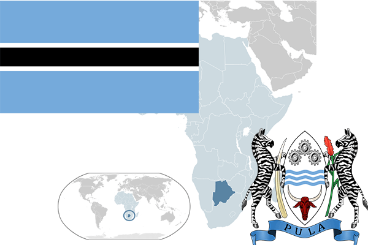

To`liq nomi: Botsvana Respublikasi
Region: Janubiy Afrika
Qonunchilik shakli: Respublika
Mustaqillik kuni: 30-sentabr 1966 yil (Birlashgan Qirollikdan)
Poytaxti: Gaborone
Maydoni: 581 730 km² (dunyoda 46 -o`rinda )
Chegaradosh davlatlari: Zambiya, Zimbabve, Namibiya
Aholisi: 2 112 049 (dunyoda 144 -o`rinda ) 2013 -yil roʻyxat
Aholi zichligi: 3,4 /km²
Aholining o`rtacha yoshi: 50,6 yil ( 49,6 ayollar, 51,6 erkaklar)
Rasmiy tili: Tsvana va ingliz tillari
Dini: Asosiy qismi mahalliy dinlarga, 15% Xristian
Pul birligi: pula
Telefon prefiksi: +267
Internet domen: .bw
Xalqaro tashkilotlarga a`zoligi: BMT (1966 –yildan)
Dengiz va okeanlarga chiqishi: yo`q
YIM: Butun: $ 26,6 mlrd, Jon boshiga: $ 14 906 (2010 - yil roʻyxati)
Yirik shaharlari: Gaborone